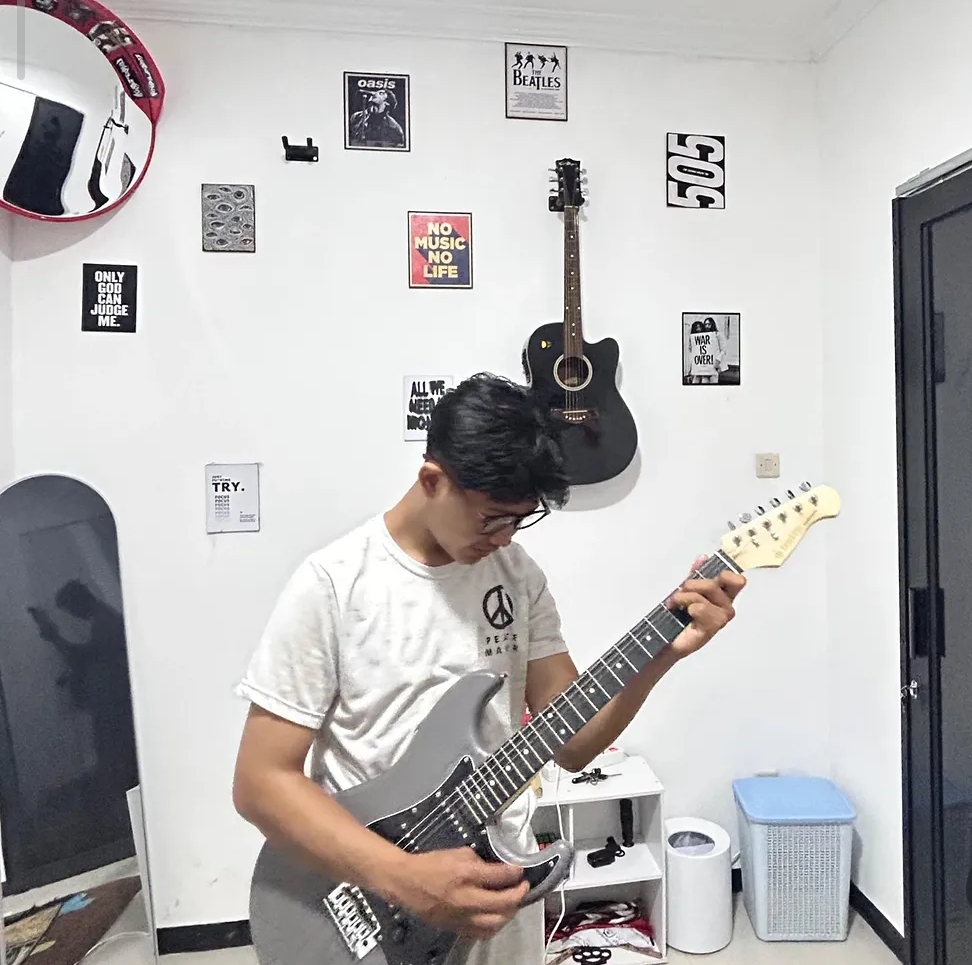
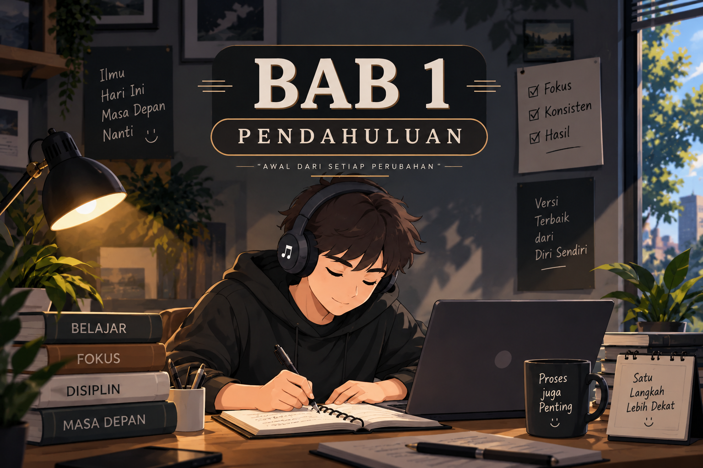
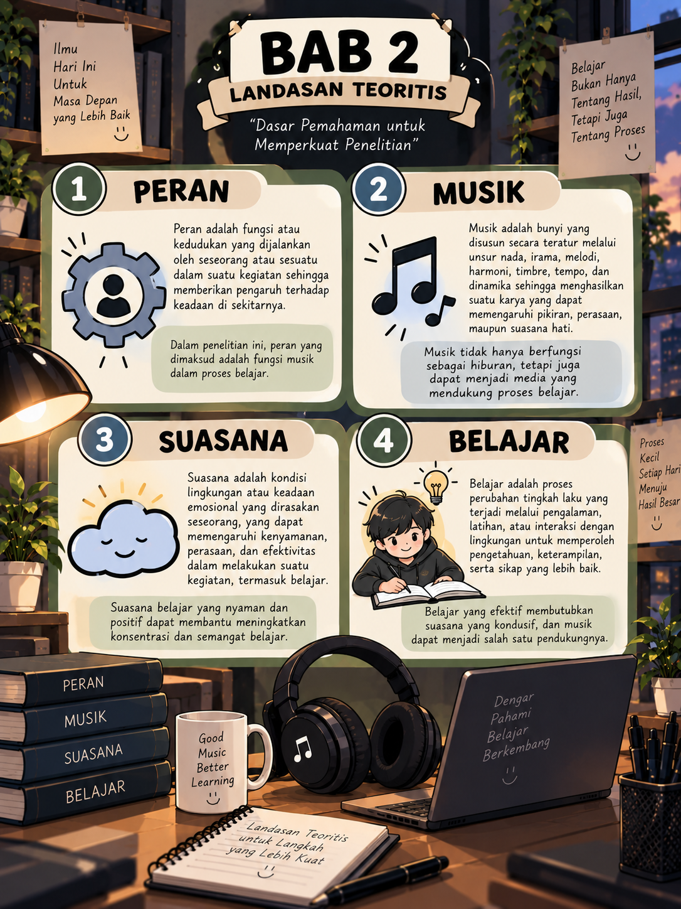
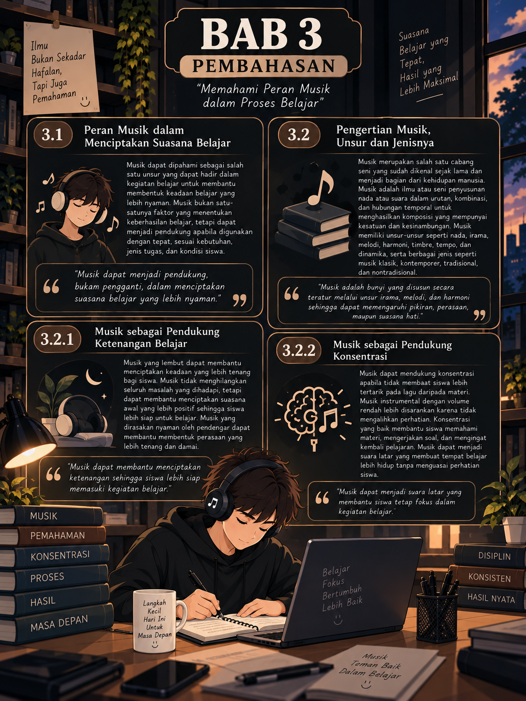
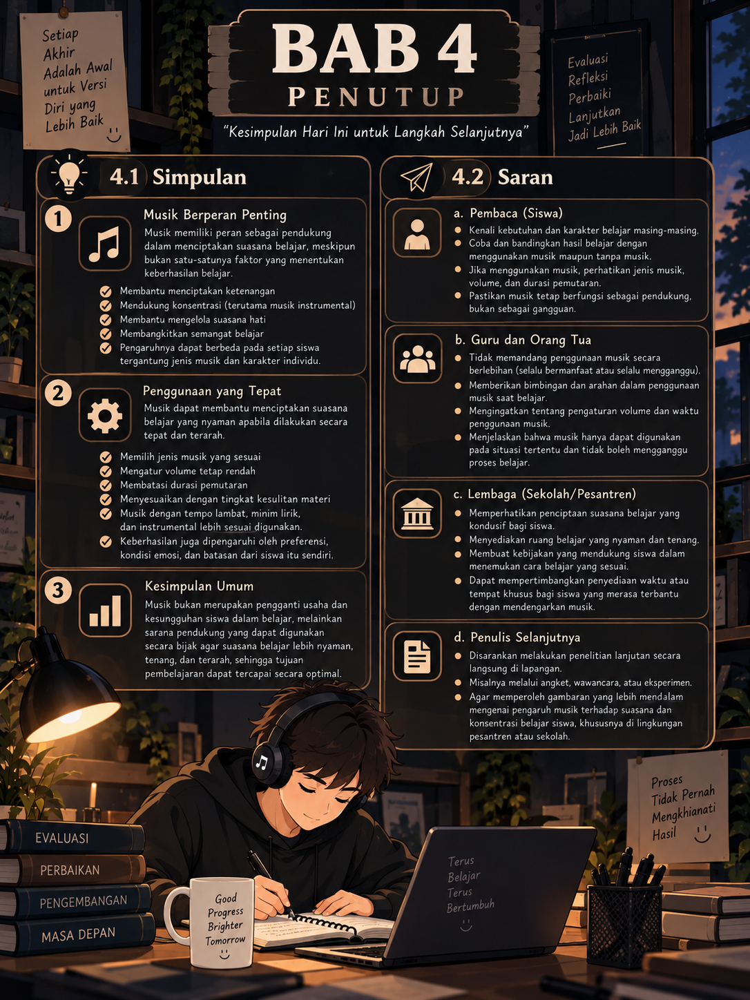

Karya Tulis Ilmiah · Peran Musik Dalam Menciptakan Suasana Belajar
Peran Musik Dalam Menciptakan Suasana Belajar - Kenyamanan, Konsentrasi, Relaksasi, dan Motivasi Belajar.
Unduh Karya TulisTentang Penyusun

Fachri Akbar Djaelani
XII MIPA 1 · MA Persis Tarogong
Penulis bernama lengkap Fachri Akbar Djaelani, lahir di Garut pada 10 Oktober 2008, merupakan anak kedua dari dua bersaudara pasangan Bapak Deden Akbar dan Ibu Yeni Maryani, beralamat di Kp. Pasir Teureup RT02/RW12, Desa Sukarame, Kecamatan Leles, Kabupaten Garut, Jawa Barat; ia menempuh pendidikan di TK AR-Rahman (2012–2014), SDN Cangkuang 05 (2015–2021), pendidikan keagamaan di MD Persis 160, dan kini melanjutkan di MA Persis Tarogong sejak 2024, serta pada 2025–2026 diamanahi sebagai Pradana Pramuka; penulis memiliki minat besar dalam musik dan mampu bermain gitar, menyukai dunia permesinan dengan impian membuat mesin kendaraan, dan bercita-cita menjadi seorang pilot.
- Sekolah
- MA Persis Tarogong
- Kelas
- XII MIPA 1
- Kontak
- fadjaanugas@gmail.com
Pendahuluan
Latar Belakang
Belajar membutuhkan suasana yang nyaman agar siswa dapat berkonsentrasi dan memahami materi dengan baik. Namun, konsentrasi dapat terganggu oleh kebisingan, rasa bosan, mengantuk, maupun penggunaan HP. Musik menjadi salah satu cara yang sering digunakan siswa untuk menciptakan suasana belajar yang nyaman. Musik dapat membantu meningkatkan mood, motivasi, perhatian, dan konsentrasi, meskipun pengaruhnya berbeda pada setiap siswa. Oleh karena itu, penulis tertarik untuk membahas peran musik dalam menciptakan suasana belajar siswa.
Rumusan Masalah
- Peran Musik Dalam Menciptakan Suasana Belajar ?
- Bagaimana Musik Dalam Menciptakan Suasana Belajar ?
Tujuan
Mengetahui Peran Musik Dalam Menciptakan Suasana Belajar. Mengetahui Bagaimna Musik Dalam Menciptakan Suasana Belajar.

Tinjauan Pustaka

Landasan Teori
- Peran dapat dipahami sebagai fungsi atau kedudukan yang dijalankan oleh seseorang maupun sesuatu dalam suatu kegiatan, sehingga memberikan pengaruh terhadap keadaan di sekitarnya (Awaludin & Ramdani, 2022). Dalam konteks ini, peran yang dimaksud adalah fungsi musik dalam memengaruhi dan membantu menciptakan suasana belajar siswa.
- Musik adalah bunyi yang disusun secara teratur melalui unsur nada, irama, melodi, dan harmoni sehingga menghasilkan komposisi yang memiliki kesatuan dan dapat memengaruhi pikiran, perasaan, maupun suasana hati pendengarnya (Haryandri, 2020). Unsur-unsur musik meliputi nada, irama, melodi, harmoni, timbre, tempo, dan dinamika (Pranoto & Septiani, 2023), yang secara terpadu membentuk karakter sebuah karya musik. Musik juga dapat dibedakan menjadi beberapa jenis: musik klasik, kontemporer, tradisional, dan nontradisional.
- Suasana belajar merupakan kondisi fisik maupun psikologis yang melingkupi kegiatan belajar siswa dan dapat memengaruhi tingkat konsentrasi, kenyamanan, serta semangat siswa dalam memahami materi (Herman dkk., 2022). Suasana ini dipengaruhi oleh lingkungan keluarga, sekolah, dan masyarakat, serta faktor non-sosial seperti udara, cuaca, dan suara di sekitar tempat belajar.
- Belajar adalah proses perubahan tingkah laku sebagai hasil dari pengalaman, latihan, dan interaksi individu dengan lingkungannya, yang mencakup aspek kognitif, afektif, dan psikomotor (Parnawi, 2020).
Penelitian / Referensi Terkait
- Maghfiroh & Nurharini (2018) menunjukkan bahwa kegiatan musik dapat membantu membentuk konsentrasi siswa melalui pembiasaan untuk fokus dan mengikuti arahan.
- Khoirot, Yusuf, Aisyah, & Alfikri (2024) menemukan bahwa musik instrumental memberikan pengaruh nyata terhadap peningkatan perhatian belajar mahasiswa, dan musik tanpa lirik cenderung lebih efektif sebagai pengiring belajar.
- Silaen, Ramadhanti, & Utami (2023) mengungkapkan bahwa musik jazz memberikan pengaruh lebih signifikan terhadap konsentrasi belajar dibandingkan musik pop.
- Hidayat, Febrianti, Rohmah, & Jantia (2025) menemukan adanya kecenderungan peningkatan konsentrasi belajar siswa sekolah dasar setelah mendengarkan musik instrumental.
- Kartini & Sa'adah (2022) menunjukkan bahwa mendengarkan musik religi dapat memperbaiki suasana hati mahasiswa sehingga lebih mudah berkonsentrasi saat belajar.
Kerangka Berpikir
Musik memiliki unsur-unsur (nada, irama, melodi, harmoni, tempo, dinamika) yang dapat memengaruhi tingkat arousal atau kewaspadaan seseorang. Musik dengan tempo lambat dan minim lirik cenderung menciptakan kondisi emosional yang tenang, sehingga membantu membentuk suasana belajar yang nyaman dan kondusif. Suasana belajar yang nyaman ini pada gilirannya meningkatkan konsentrasi, kenyamanan, dan semangat siswa dalam proses belajar — yang merupakan inti dari proses perubahan tingkah laku (belajar) itu sendiri. Dengan demikian, keempat teori di atas (peran, musik, suasana, dan belajar) saling berkaitan membentuk dasar pemikiran bahwa musik berperan menciptakan suasana belajar yang optimal bagi siswa.
Pembahasan
Metode / Pendekatan
Pembahasan pada bab ini disusun menggunakan studi literatur, yaitu dengan mengkaji dan menganalisis berbagai sumber pustaka (jurnal, buku, dan hasil penelitian terdahulu) yang berkaitan dengan peran musik, konsentrasi, suasana hati, dan proses belajar. Temuan-temuan dari sumber tersebut kemudian dihubungkan dengan landasan teori pada Bab II untuk menjawab rumusan masalah mengenai peran musik dalam menciptakan suasana belajar yang nyaman bagi siswa.
Hasil & Analisis
- Musik berperan sebagai pendukung ketenangan belajar — musik yang lembut membantu siswa merasa lebih nyaman dan siap memulai kegiatan belajar, tanpa harus berada dalam kondisi hening sepenuhnya.
- Musik berperan sebagai pendukung konsentrasi, khususnya musik instrumental tanpa lirik, karena tidak bersaing secara kognitif dengan proses membaca, menulis, atau menghafal materi.
- Musik berperan sebagai penunjang suasana hati dan semangat belajar, membantu siswa yang jenuh atau kurang bersemangat menjadi lebih siap memulai maupun melanjutkan tugas.
- Jenis musik perlu dipilih sesuai kebutuhan — musik instrumental, lo-fi, klasik, atau bunyi alam lebih sesuai untuk tugas yang membutuhkan pemahaman tinggi, sedangkan musik dengan lirik yang dikenal atau tempo cepat berisiko mengalihkan perhatian.
- Volume, tempo, dan durasi pemutaran musik memengaruhi efektivitasnya — musik sebaiknya diputar rendah sebagai latar dan dibatasi durasinya agar tidak menimbulkan ketergantungan.
- Kesesuaian musik dengan jenis kegiatan belajar turut menentukan hasil — tugas rutin (merangkum, menggambar) lebih fleksibel terhadap musik, sedangkan materi baru atau sulit (rumus, hafalan) lebih baik dipelajari dalam suasana tenang.
- Keberhasilan penggunaan musik bergantung pada faktor individu, seperti preferensi, kondisi emosi, tingkat kesulitan materi, serta lingkungan belajar siswa — sehingga pengaruh musik tidak dapat disamaratakan untuk semua orang.
- Musik memiliki batasan penggunaan, yakni tidak boleh dijadikan alasan menunda tugas atau berlama-lama dengan gawai, dan penggunaan earphone tetap perlu memperhatikan volume serta waktu istirahat telinga.
Pembahasan
Temuan-temuan di atas menegaskan bahwa musik bukan faktor tunggal penentu keberhasilan belajar, melainkan pendukung yang efektivitasnya bergantung pada jenis musik, volume, durasi, jenis tugas, serta kondisi emosi dan preferensi masing-masing siswa — sejalan dengan teori arousal dan konsep suasana belajar pada Bab II (Herman dkk., 2022; Khoirot dkk., 2024). Musik dengan tempo lambat, minim lirik, dan volume rendah cenderung paling sesuai sebagai musik latar, sedangkan materi yang sulit atau baru justru lebih baik dipelajari dalam kondisi tenang tanpa musik.
Penerapannya dilakukan melalui langkah sederhana: menyiapkan tempat dan materi belajar, memilih musik sesuai kebutuhan, menentukan target belajar yang jelas, serta mengatur waktu istirahat agar musik tidak menjadi pusat perhatian melainkan tetap berperan sebagai latar. Dengan demikian, jawaban atas rumusan masalah adalah: musik dapat berperan mendukung ketenangan, konsentrasi, suasana hati, dan semangat belajar siswa, serta dapat membantu menciptakan suasana belajar yang nyaman apabila digunakan secara sadar, terukur, dan tetap berorientasi pada tujuan belajar itu sendiri.

Penutup

Kesimpulan
Musik memiliki peran sebagai pendukung dalam menciptakan suasana belajar siswa, meskipun bukan satu-satunya faktor penentu keberhasilan belajar. Musik membantu menciptakan ketenangan sebelum dan selama belajar, mendukung konsentrasi (terutama musik instrumental yang minim lirik), serta membantu mengelola suasana hati dan membangkitkan semangat belajar. Meski demikian, pengaruh musik tidak selalu signifikan pada setiap siswa karena bergantung pada jenis musik dan karakteristik masing-masing individu.
Penggunaan musik dapat membantu menciptakan suasana belajar yang nyaman apabila dilakukan secara tepat — melalui pemilihan jenis musik yang sesuai, pengaturan volume tetap rendah sebagai suara latar, pembatasan durasi agar tidak menimbulkan ketergantungan, serta penyesuaian dengan tingkat kesulitan materi. Musik bertempo lambat, minim lirik, dan bersifat instrumental cenderung paling sesuai sebagai pengiring belajar.
Dengan demikian, musik bukan pengganti usaha dan kesungguhan siswa dalam belajar, melainkan sarana pendukung yang dapat digunakan secara bijak agar suasana belajar terasa lebih nyaman, tenang, dan terarah, sehingga tujuan pembelajaran dapat tercapai secara lebih optimal.
Saran
-
a. Pembaca
Siswa disarankan mengenali kebutuhan dan karakter belajarnya masing-masing sebelum menggunakan musik sebagai pengiring belajar, serta membandingkan hasil belajar dengan dan tanpa musik untuk menemukan cara yang paling sesuai. Jika belajar sambil mendengarkan musik, perhatikan jenis musik, volume, dan durasi agar tetap berfungsi sebagai pendukung, bukan gangguan.
Guru dan orang tua disarankan tidak memandang musik secara berlebihan—baik selalu bermanfaat maupun selalu mengganggu—melainkan membimbing siswa menggunakannya secara bijak, termasuk mengatur volume dan waktu penggunaannya.
-
b. Penulis Selanjutnya
Karya tulis ini masih terbatas pada kajian pustaka. Penulis selanjutnya disarankan melakukan penelitian lanjutan secara langsung (angket, wawancara, atau eksperimen) untuk memperoleh gambaran yang lebih mendalam mengenai pengaruh musik terhadap suasana dan konsentrasi belajar siswa.
-
c. Lembaga
Pesantren atau sekolah disarankan memperhatikan penciptaan suasana belajar yang kondusif, baik melalui ruang belajar yang nyaman maupun kebijakan yang mendukung siswa menemukan cara belajar sesuai kebutuhannya, termasuk mempertimbangkan waktu atau tempat khusus bagi siswa yang terbantu dengan musik saat belajar mandiri.